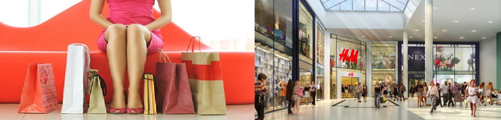
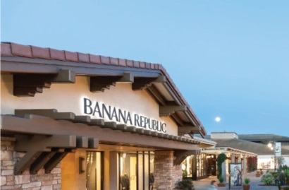
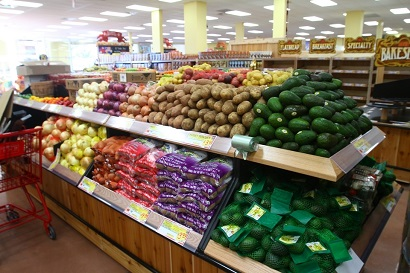
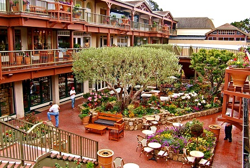

Shopping
- 戴尔蒙特购物中心
- 加州蒙特雷德尔蒙特路1410号，邮编93940
- 电话：(831) 373-2705 • 网址：www.delmontecenter.com
- 营业时间：周一至周五——上午10点-晚上9点；周六——上午10点-下午7点；周日——上午11点-下午5点。 购物中心里地摊点，电影院和饭店营业时间视具体商店而定。
- 德尔蒙特购物中心是位于加州蒙特雷的一个开放式的购物中心。它是蒙特雷半岛上最大的一个购物中心，也是整个蒙特雷郡第二大的购物中心，这里有着方圆22英里范围内唯一一个百货商店。
-

- 缺德舅
- 加州蒙特雷Munras大道570号，邮编93940
- 电话：(831) 372-2010 • 网站：www.traderjoes.com
- 缺德舅是美国一个私人拥有的生活用品连锁商店，其总部位于加州蒙罗维尔，属于大洛杉矶地区。截止至5月16日，缺德舅一共有418家连锁店。
- 缺德舅大部分的店都分布在加州，其中分布密度最高的地区在南加州。但公司在加州以外的其他38个州和华盛顿哥伦比亚特区也有分店。在位于蒙特雷市中心的缺德舅，你可以找到各种生活必需品，商品质量值得信赖，价格合理。
-

- 卡梅尔购物广场
- Ocean Ave和Mission Street的交汇处
- 电话：(831) 624-1385 • 网站：www.carmelplaza.com
- 营业时间：周一至周六——上午10点-下午6点；周日——上午11点-下午5点。
- 卡梅尔广场是蒙特雷半岛上的一颗明珠。这个优雅休闲的购物和用餐中心集中了一系列的国际知名品牌，是个值得一逛的地方。其中的特色商店包括Bottega Veneta, Khaki's of Carmel, Tiffany & Co.,和Tommy Bahama。
-
